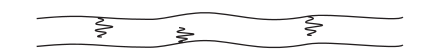
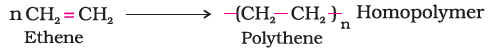
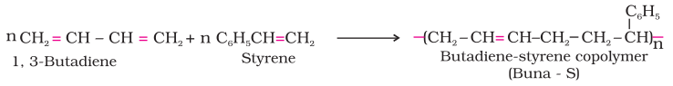
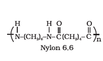

There are several ways of classification of polymers based on some special considerations. The following are some of the common classifications of polymers:
Under this type of classification, there are three sub categories.
There are three different types based on the structure of the polymers.
These polymers consist of long and straight chains. The examples are high density polythene, polyvinyl chloride, etc. These are represented as:
These polymers contain linear chains having some branches, e.g., low density polythene. These are depicted as follows:

These are usually formed from bi-functional and tri-functional monomers and contain strong covalent bonds between various linear polymer chains, e.g. bakelite, melamine, etc. These polymers are depicted as follows:

Polymers can also be classified on the basis of mode of polymerisation into two sub groups.
The addition polymers are formed by the repeated addition of monomer molecules possessing double or triple bonds, e.g., the formation of polythene from ethene and polypropene from propene. However, the addition polymers formed by the polymerisation of a single monomeric species are known as homopolymers, e.g., polythene.

The polymers made by addition polymerisation from two different monomers are termed as copolymers, e.g., Buna-S, Buna-N, etc.

The condensation polymers are formed by repeated condensation reaction between two different bi-functional or tri-functional monomeric units. In these polymerisation reactions, the elimination of small molecules such as water, alcohol, hydrogen chloride, etc. take place. The examples are terylene (dacron), nylon 6, 6, nylon 6, etc. For example, nylon 6, 6 is formed by the condensation of hexamethylene diamine with adipic acid.

A large number of polymer applications in different fields depend on their unique mechanical properties like tensile strength, elasticity, toughness, etc. These mechanical properties are governed by intermolecular forces, e.g., van der Waals forces and hydrogen bonds, present in the polymer. These forces also bind the polymer chains. Under this category, the polymers are classified into the following four sub groups on the basis of magnitude of intermolecular forces present in them.
These are rubber – like solids with elastic properties. In these elastomeric polymers, the polymer chains are held together by the weakest intermolecular forces. These weak binding forces permit the polymer to be stretched. A few 'crosslinks' are introduced in between the chains, which help the polymer to retract to its original position after the force is released as in vulcanised rubber. The examples are buna-S, buna-N, neoprene, etc.

Fibres are the thread forming solids which possess high tensile strength and high modulus. These characteristics can be attributed to the strong intermolecular forces like hydrogen bonding. These strong forces also lead to close packing of chains and thus impart crystalline nature. The examples are polyamides (nylon 6, 6), polyesters (terylene), etc.

These are the linear or slightly branched long chain molecules capable of repeatedly softening on heating and hardening on cooling. These polymers possess intermolecular forces of attraction intermediate between elastomers and fibres. Some common thermoplastics are polythene, polystyrene, polyvinyls, etc.

These polymers are cross linked or heavily branched molecules, which on heating undergo extensive cross linking in moulds and again become infusible. These cannot be reused. Some common examples are bakelite, urea-formaldelyde resins, etc.